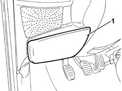
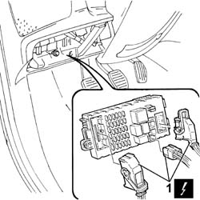
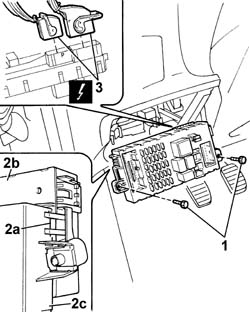

5505A10 electrical junction unit - r+r
- Path
- Procedures > 55 ELECTRICAL EQUIPMENT > 5505 ELECTRICAL CIRCUIT FOR INSTRUMENTS/INDICATORS > 5505A multi-function components > 5505A10 electrical junction unit - r+r
- Kind
- repair procedure (removal / refitting; the operation number is the code)
- Applies to
- all engines; all production periods
- Interactive page
- https://sloeber94.github.io/elrnDB-fDbl/en/#/2584873
Applies to: all engines; all production periods
 Removing
Removing
 Refitting
RefittingDisconnect the battery negative terminal.
1. Open the protective flap.

Applies to: all engines; all production periods
1. Disconnect the front junction unit electrical connectors.
Name | Connector | |
|---|---|---|
1a | Junction unit under dashboard |

Applies to: all engines; all production periods
1. Undo the bolts fixing the junction unit.
2. Release the retaining springs (2a) on both sides and separate the junction unit (2b) from the body computer (2c).
3. Disconnect the rear electrical connectors and remove the junction unit.
 | Name | Connector |
|---|---|---|
3 | Junction unit under dashboard |

Applies to: all engines; all production periods
Refitting
RemovingConnect the rear electrical connectors.
| Name | Connector |
|---|---|---|
- | Junction unit under dashboard |
Connect the junction unit to the body computer, checking that the side retaining springs are correctly fastened.
Tighten the bolts fixing the junction unit.
Connect the front control unit electrical connectors and close the protective flap.
Connect the battery negative terminal.
Topics linked from this page (1)
Topics that link to this page (28)
- J20 REARSCREEN AND DOOR MIRROR DEFROSTING NOT WORKING
- M01 ELECTRIC FRONT WINDOWS / NOT WORKING
- 5020A10 heater box - r+r
- 5020A40 heater fan motor selector - r+r
- 5020A50 heater radiator - r+r
- 5020B10 heater control support - r+r
- 5020B35 outdoor/recirculation air intake flap control cable - r r
- 5020B38 air distribution flap control cable - r+r
- 5020B42 air mixer flap control cable - r+r
- 5020B80 heater system wiring bundle - r r or replace
- 5040B22 air conditioning system de-mister thermostat - r+r
- 5040C10 air conditioner box - r+r
- 5040C40 air conditioner fan motor switch - r r
- 5040C50 air conditioner heater radiator - r+r
- 5040C64 a/c evaporator - r+r
- 5040D10 air conditioner control support - r+r
- 5040D35 air intake / recirculation flap cable - r r
- 5040D40 air mixer flap control cable - r + r
- 5505A32 body computer - r r
- 5505C26 bonnet wiring - r r
- 5505C28 intergrated engine bay and abs system wiring - r r
- 5505C31 under-facia wiring - r r
- 5505C41 cabin wiring - r r
- 7005A28 front side door limiter- repair or replace
- 7040A10 instrument facia trim - r+r
- 7040A48 side bracket of beam supporting instrument and control facia one lh or rh r r
- 7040A97 facia trim support beam - r r
- 7040L17 passenger compartment floor front carpet - r r